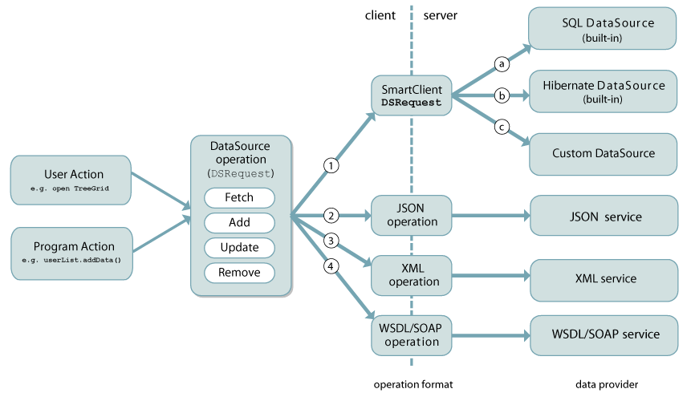
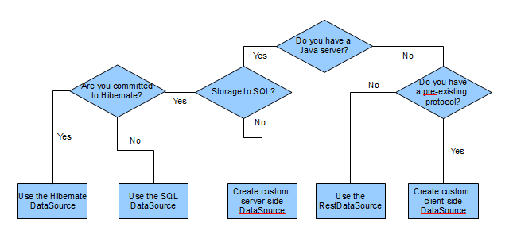

|
|||||||||
| PREV CLASS NEXT CLASS | FRAMES NO FRAMES | ||||||||
| SUMMARY: NESTED | FIELD | CONSTR | METHOD | DETAIL: FIELD | CONSTR | METHOD | ||||||||
public interface ClientServerIntegration
DataSources
First you must create
DataSources that describe the objects from your
object model that will be loaded or manipulated within your application. All of Smart GWT's
most powerful functionality builds on the concept of a DataSource, and because of Smart GWT's
databinding framework (see DataBoundComponent), it's as
easy to create a DataSource that can configure an unlimited number of components as it is to
configure a single component.
For background information on how to create DataSources,
bind components to DataSources and
initiate DSRequests, please see the Data Binding
chapter of the Smart GWT Quickstart Guide.
Data Integration
DataSources provide a data-provider agnostic API to Smart GWT Visual Components that allow them to perform the 4 CRUD operations (Create, Retrieve, Update, Delete). By "agnostic" we mean that the implementation details - the nuts and bolts of how a given DataSource actually retrieves or updates data - are unknown to bound Smart GWT components. One effect of this is that DataSources are "pluggable": they can be replaced without affecting the User Interface.
When a visual component, or your own custom code, performs a CRUD
operation on a DataSource, the DataSource creates a DSRequest
(DataSource Request) representing the operation. "Data Integration" is the process of
fulfilling that DSRequest by creating a corresponding DSResponse (DataSource Response), by using a variety of possible
approaches to connect to the ultimate data provider.
There are two main approaches to integrating DataSources with your server technology:
Client-side integration: DataSource requests
arrive as simple HTTP requests which your server code receives directly (in Java, you use the
Servlet API or .jsps to handle the requests). Responses are sent as XML or JSON which you
directly generate.
Smart GWT supports, out of the box, codeless connectivity to various kinds of common data providers, including SQL and Hibernate. Smart GWT also provides functionality and tools for accelerated integration with broad categories of data providers, such as Java Object-based persistence mechanisms (JPA, EJB, Ibatis, in-house written systems), and REST and WSDL web services in XML or JSON formats. Ultimately, a DataSource can be connected to anything that is accessible via HTTP or HTTPS, and also to in-browser persistence engines such as Google Gears.
Choosing a Data Integration Approach
This section aims to help you decide which of the many possible data integration approaches is best for your particular circumstances. The recommendations given here will guide you to the approach that involves the least effort.

SQLDataSource vs JPA/Hibernate in order to
understand the large benefits the SQLDataSource providesautoDeriveSchema feature, or
from Java Beans via the schemaBean feature. Or, use
the Admin Console to generate tables from
DataSource definitions you create by handschemaBean feature to derive DataSource definitions from any Java beancustom DataSource that
provides the CRUD operations you want to support.DMI, or any combination of the
two: OperationBinding allow you to dynamically set data values
at transaction-processing time, using built-in Velocity supportvalidate() method of the DataSource to provide extra custom validations
- just call super to obtain the list of errors derived from Smart GWT
validations, then add to that list as required with your own custom codeexecute() method of the DataSource to add extra processing
either before or after the Smart GWT processingTransaction Chaining to dynamically set
data values according to the results of earlier transactionsSQL Templating to change,
add to or even completely replace the SQL sent to the database, and to implement
special query requirementscustom HQL queries to
implement special query requirementsthe server integration overview. RestDataSourceclient-side data integration features
to create a custom client-side DataSource that adapts the DataSource protocol to
your existing services
RPCs: Unstructured Server
Communication
Smart GWT also supports "unstructured" client-server operations. These
RPCRequests (Remote Procedure Call Requests) are a low-level,
very flexible mechanism for custom client-server communications. In an nutshell, RPCRequests:
RPCManager.send), and have their responses handled by
custom code (the callback passed to send()) RPCRequests are relatively
rare. Most client-server communications are better done in a structured fashion using a
DSRequest (DataSource Request). Note that any
RPCRequest can alternatively be framed as a DataSource fetch; depending on the
circumstances, this may be more convenient.
See the RPCManager documentation for further information on RPCRequests.
|
|||||||||
| PREV CLASS NEXT CLASS | FRAMES NO FRAMES | ||||||||
| SUMMARY: NESTED | FIELD | CONSTR | METHOD | DETAIL: FIELD | CONSTR | METHOD | ||||||||